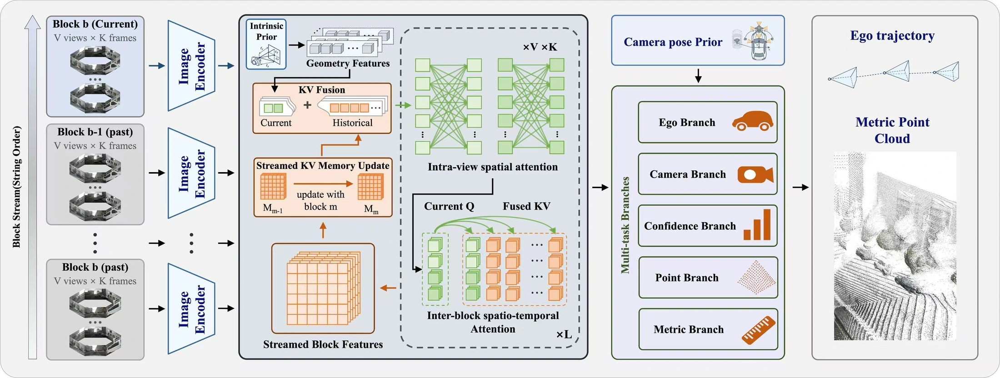
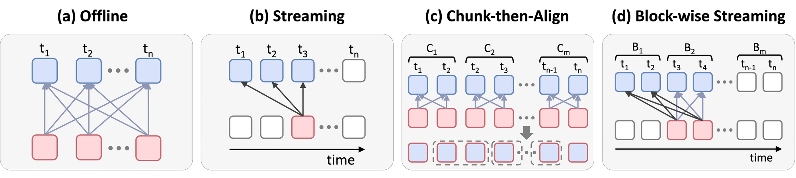
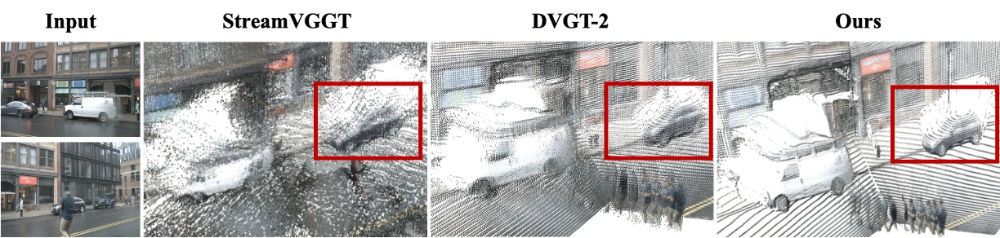
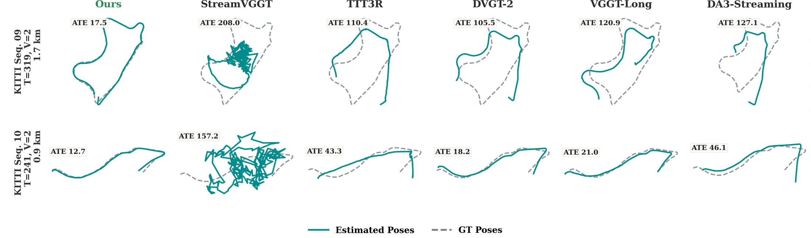

01
Block-wise causal attention
Frames and camera views inside a block reason together bidirectionally. Across blocks, a causal KV cache carries historical features forward without recomputing the entire sequence.
Geometry that goes the distance.
1 AutoLab, School of Artificial Intelligence, Shanghai Jiao Tong University
2 Voyager Research, Didi Chuxing · 3 The Chinese University of Hong Kong, Shenzhen
* Corresponding author
Driving logs do not end after a short clip. Their geometry should hold together for the whole journey.
Fully bidirectional models struggle with the memory cost of long sequences. Per-frame streaming loses local future context and accumulates drift. Fixed chunks preserve local reasoning, but fragment the global scene.
Drive3R brings the strengths together: bidirectional attention within each block, causal feature propagation across blocks, and confidence-aware re-anchoring when the streaming state becomes unreliable.
High-fidelity closed-loop simulation for autonomous driving increasingly relies on dense multi-view 3D reconstruction. While recent feed-forward geometric foundation models have revolutionized per-scene optimization, applying them to continuous, long-horizon driving sequences is computationally intractable due to GPU memory limits and the quadratic complexity of global attention. Existing scaling strategies are fundamentally limited, as causal streaming suffers from compounding scale drift and trajectory deviation, while rigid “chunk-then-align” heuristics fragment global context and produce trajectory discontinuities. To address these limitations, we introduce Drive3R, a block-wise streaming geometric foundation model. Its block-wise causal attention resolves the scalability bottleneck of fully bidirectional attention while avoiding the loss of local future context in purely causal streaming. Its confidence-aware re-anchoring further mitigates long-range drift by detecting unreliable streaming states, re-initializing the KV cache, and stitching refreshed segments through SE(3) alignment. Extensive experiments demonstrate that Drive3R establishes a new state-of-the-art on nuScenes, KITTI, and Waymo. Specifically, on nuScenes, it improves over the recent DVGT-2 baseline from 0.1806 to 0.1081 in AbsRel, from 0.6750 to 0.5344 in point-cloud Accuracy, and from 1.5812 to 0.9092 in ATE.
One model for metric geometry,
ego-motion, and streaming reliability.

Frames and camera views inside a block reason together bidirectionally. Across blocks, a causal KV cache carries historical features forward without recomputing the entire sequence.
A block-level confidence head monitors the streaming state. When confidence drops, Drive3R resets the cache and uses overlapping poses to align a refreshed segment into the global frame with SE(3).

15 frames · full camera views
| Method | AbsRel ↓ | δ < 1.25 ↑ | Accuracy ↓ | Completeness ↓ | AUC@30 ↑ | ATE ↓ |
|---|---|---|---|---|---|---|
| DVGT-2 | 0.1806 | 0.7285 | 0.6750 | 0.6230 | 85.08 | 1.5812 |
| Drive3R Ours | 0.1081 | 0.9077 | 0.5344 | 0.5374 | 86.92 | 0.9092 |
Drive3R advances depth estimation, dense scene geometry, and ego-motion on nuScenes, reducing depth error by 40.1% and trajectory error by 42.5% versus DVGT-2.
Bold: best result. * Baselines aligned to metric scale.
Drive3R reduces average trajectory error by 44.8% compared with DVGT-2 across 11 complete KITTI driving sequences.
Road surfaces, object boundaries,
and long-range trajectories.


For dense metric reconstruction and
long-horizon autonomous driving research.
@misc{yang_drive3r,
title = {Drive3R: Block-wise Streaming Geometric
Foundation Models for Autonomous Driving},
author = {Yang, Tianyi and Yang, Haojun and
Xiao, Jipeng and Chen, Xuesong and Shi, Shaoshuai
and Jiang, Li and Zhang, Zhipeng},
note = {Research manuscript}
}